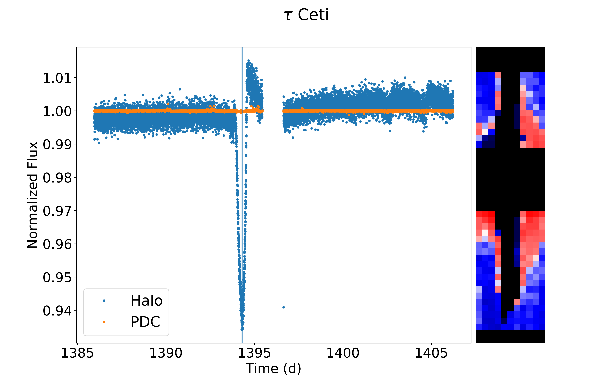
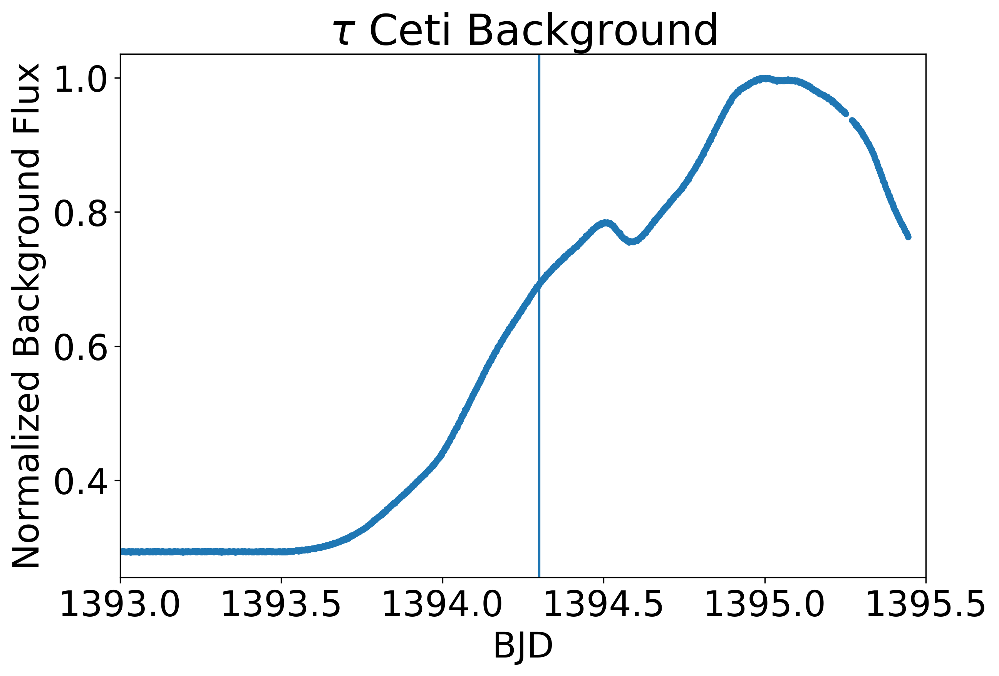

Notes on τ Ceti
Outside of our solar system, the nearest solar-like stars are only a few light-years away: the two bright components of the binary system α Centauri AB (orbited by a third component Proxima Centauri, a dim red dwarf). But to find a star like the sun with no companion, you have to look a little further away to τ Ceti (tau Ceti), a G8 dwarf (which means it is a little less massive and cooler than the G2 Sun) which is the second-closest star system visible to the naked eye at a distance of only about 12 light-years.
Such a close system is one of the first targets for bold proposals for interstellar travel and contact, and for science fiction: closest to my heart, in Ursula Le Guin's The Dispossessed, τ Ceti is home to the twin habitable worlds of Urras and Anarres; the former capitalist, the latter the home for anarchist exiles. But to astronomers since then it has become increasingly exciting as a host for real exoplanets: from radial velocity observations (measuring the red and blue shift in the star's spectrum as it is tugged back and forth by planets) it has been suspected since 2012 that it hosts a number of exoplanets, with orbital periods of a few weeks to a few years. If one of these transits, it would be a huge discovery - both by independently confirming the existence of these planets, but also because it would open up an unprecedented opportunity to study their atmospheres as they are illuminated by the star behind during transit. τ Ceti is ten times brighter than the next-brightest transiting planet host star and the extra light would be a significant boon to photon-starved spectrographs trying to detect chemistry (and life!) in its atmosphere.
When the data from the Transiting Exoplanet Survey Satellite (TESS) covering τ Ceti came out two weeks ago, I received an email from Prof. Suzanne Aigrain at Oxford, my former DPhil supervisor, saying that the Planet Hunters team had noticed evidence of a transit in the light curve of τ Ceti and asking if I could check this - without knowing when the transit they found occurred, so that I had to replicate the result blind! One of the difficulties is that τ Ceti is very bright, a third magnitude star in a telescope that saturates (overexposes - just like in other cameras) on stars three magnitudes (fifteen times) fainter. In my DPhil, I had worked with Dr Tim White (ANU) to develop the method of 'halo photometry' (the code halophot) to deal with this problem for similar data obtained by the previous mission Kepler, which we used to look at the Seven Sisters and the planet-hosting red giant Aldebaran. The way it works is by discarding the unusable 'saturated' pixels but looking at the broader distribution of light (the 'halo') around the star and teasing out a signal from these many good pixels. So I used this code to look at τ Ceti (and if you want to see how it's used and the plots below were made, check out the Jupyter notebooks on the GitHub repo!). Running halophot, it produces a huge signal that looks just like a transit (light curve on the left - standard 'PDC' pipeline in orange, new halo light curve in blue, halo map on the right):

When I told Suzanne, she confirmed this was exactly when they thought the transit was. So we were on: time to check if it's real! Suzanne's postdoc Dr Oscar Barragán modelled the transit signal in the standard PDC data, assuming the transit was equatorial, the planet was in a circular orbit and using the stellar mass and radius to try to estimate a range of valid periods. The depth of the transit signal gives you a planet to star ratio of 0.0108835, translating to a planet radius of 0.94 Earth radii. So this would be by far the closest Earth-sized planet to be known to transit. Meanwhile from the transit duration of ~ 11 hours we get that the minimum orbital period should be ~ 230 days, corresponding to an orbital radius of ~0.7 AU (though somewhat worryingly, not to the known periods of any of the planets found by radial velocity - though it could just be because it has too low a mass to detect). At this distance from the star the planet's equilibrium temperature would be ~225 K. At nearly fifty degrees C below freezing this is quite cold, but there is a lot of uncertainty about the effects of planetary atmospheres, and to me this is quite exciting - no cool transiting Earths are known around such a nearby star!
Oscar produced this great visualization of his model:

So with such high stakes we had to be very careful. In comparison to the PDC data, the transit in the halo light curve I made was much higher signal-to-noise, but seemed much deeper (a few percent rather than a fraction of a percent). This isn't necessarily a killer, in that neither the absolute normalization of PDC nor halo light curves of saturated stars is completely accurate, but they are usually much closer than this. First thing to check: halophot doesn't do anything obviously wrong, and generates a model (on the right of the figure above) that looks rather like the expected pattern of light from a star as seen by TESS. The light curve you get from this has a deep and clean transit, which is maybe a bit long and deep, but looks ok.
What is immediately suspicious, though, is that it occurs just before perigee: TESS has an eccentric orbit in a 2:1 resonance with the moon, which means that twice a month it approaches very close to the Earth briefly (perigee) and then swings back out again to spend most of its orbit far away. When it is at perigee it is subject to a lot of reflected light from the Earth - Earthshine! This is why there is a gap right in the middle of the light curve. So to me it immediately raised alarm bells that this signal happened just when the telescope was most vulnerable to contamination from background light.
To figure out what is going on with the Earthshine, we produce a 'background' light curve for τ Ceti using only pixels far away from where the star is contributing much light. Let's plot this with a vertical line to note the midpoint of the 'transit' we found earlier:

Uh-oh! There is a 'transit' signal in the background light, a little later than the transit. This isn't an absolute killer - τ Ceti is very bright, and it isn't implausible that its light could have directly contaminated the background or done so via some electronic chip effect ('cross-talk'). It is also not quite at the same time as our putative planet. But it is pretty alarming.
Let's look at some less highly processed data. What we have been looking at so far has been a 'target pixel file' (TPF) produced with a frame every 2 minutes and a lot of sophisticated calibration. Insted let's use the TESSCut tool to grab part of the Full Frame Image (FFI) data, which has 30 minute frames and a lot less processing but of a much wider field. If you use lightkurve.interact() and look at the individual pixel time series in the FFI, they all show this dip. But in the pipeline TPF this is different: above the mid-axis of the star, they go up during 'transit' and below they go down. You can actually see this at a global level if you use the slider and the right scalings: it seems that as a whole the background flux shifts upward on the detector for a few hours and then shifts back down. So something funky has happened to the spatially-varying background during processing.
So let's look at another very bright star in the field: the giant star ζ Ceti. It shows the same background dip - but as Tim White pointed out, at a slightly different time! If you look at individual pixel time series from 'above' and 'below' the star midlines, above the line they go up and below they go down - features with the same midpoint and similar duration to the 'signal' at τ Ceti - they are something to do with TESS and not a planet around τ Ceti. The difference between the top and the bottom, Tim realized, can be ascribed to the fact that these pixel cutouts are very elongated in that axis, so if we have a spatially-varying background but subtract only a constant background, we will find this asymmetric pattern. This poor background subtraction may therefore have contaminated all the pixels and created the appearance of a transit where in reality there is none.
So to look at the spatial detail in the background, I downloaded all TPFs on the same camera as τ Ceti, extracted their background light curves, and made a video of their background flux over time. Each point below is coloured by the logarithm of the background flux, clipped at the top and bottom to bring out the features best. τ Ceti is a blue star bang in the middle and ζ Ceti orange to the top right, and the 'transit' occurs at day 1394.3 or about 11 seconds into the video.
As you can probably just make out, there is a lot of spatial structure there, mostly in the lower left. Just around the transit, there is a spur through the middle towards the top right that lights up a little, and then it switches back to the lower left, and then everything gets brighter overall towards perigee. When we contacted Dr Chelsea Huang (MIT) about this, she was able to dig into the huge full frame images and make a 'difference image', subtracting one from the next to look for where the background might be changing. In her image below, τ Ceti is highlighted with a red arrow:

The fuzzy blobs pick out bright stars (e.g. τ Ceti itself, or ζ Ceti top right). The vertical streaks are probably 'straps' on the back of the detector that reflect back some of the light that passes through. There is probably also some CCD smear like you get with cheap cameras at night, and it runs up and down every column with a sufficiently bright star in it (such as τ Ceti). But more importantly are the ripply concentric rings which are lens flare from the Earth just out of shot, and you can see τ Ceti lies smack bang in the middle of one of these rings. As the Earth seems to move and get brighter this ring runs over τ Ceti and causes this apparent transit effect.
Regrettably we have been 'dispossessed' of this potentially very exciting planet candidate. But this is how science is: something that is too good to be true very often turns out that way, but it doesn't make it any less worth investigating. In digging through the data on τ Ceti we were forced to fix bugs in our code and grapple with unfamiliar systematics in TESS that we didn't see in Kepler. Personally, I am concerned that systematics which affect so many pixels in common over such a wide field are going to pose a serious problem to the approach we had been taking to bright stars in K2, and playing with the τ Ceti data has been a valuable learning experience. While we haven't yet detected her home planet's transits, we should keep in mind the maxim of Le Guin's Anarresti scientist Takver:
There was process: process was all. You could go in a promising direction or you could go wrong, but you did not set out with the expectation of ever stopping anywhere.
Image
Fit


Left & Right
 Fringilla nisl. Donec accumsan interdum nisi, quis tincidunt felis sagittis eget. tempus euismod. Vestibulum ante ipsum primis in faucibus vestibulum. Blandit adipiscing eu felis iaculis volutpat ac adipiscing accumsan eu faucibus. Integer ac pellentesque praesent tincidunt felis sagittis eget. tempus euismod. Vestibulum ante ipsum primis in faucibus vestibulum. Blandit adipiscing eu felis iaculis volutpat ac adipiscing accumsan eu faucibus. Integer ac pellentesque praesent. Donec accumsan interdum nisi, quis tincidunt felis sagittis eget. tempus euismod. Vestibulum ante ipsum primis in faucibus vestibulum. Blandit adipiscing eu felis iaculis volutpat ac adipiscing accumsan eu faucibus. Integer ac pellentesque praesent tincidunt felis sagittis eget. tempus euismod. Vestibulum ante ipsum primis in faucibus vestibulum. Blandit adipiscing eu felis iaculis volutpat ac adipiscing accumsan eu faucibus. Integer ac pellentesque praesent.
Fringilla nisl. Donec accumsan interdum nisi, quis tincidunt felis sagittis eget. tempus euismod. Vestibulum ante ipsum primis in faucibus vestibulum. Blandit adipiscing eu felis iaculis volutpat ac adipiscing accumsan eu faucibus. Integer ac pellentesque praesent tincidunt felis sagittis eget. tempus euismod. Vestibulum ante ipsum primis in faucibus vestibulum. Blandit adipiscing eu felis iaculis volutpat ac adipiscing accumsan eu faucibus. Integer ac pellentesque praesent. Donec accumsan interdum nisi, quis tincidunt felis sagittis eget. tempus euismod. Vestibulum ante ipsum primis in faucibus vestibulum. Blandit adipiscing eu felis iaculis volutpat ac adipiscing accumsan eu faucibus. Integer ac pellentesque praesent tincidunt felis sagittis eget. tempus euismod. Vestibulum ante ipsum primis in faucibus vestibulum. Blandit adipiscing eu felis iaculis volutpat ac adipiscing accumsan eu faucibus. Integer ac pellentesque praesent.
 Fringilla nisl. Donec accumsan interdum nisi, quis tincidunt felis sagittis eget. tempus euismod. Vestibulum ante ipsum primis in faucibus vestibulum. Blandit adipiscing eu felis iaculis volutpat ac adipiscing accumsan eu faucibus. Integer ac pellentesque praesent tincidunt felis sagittis eget. tempus euismod. Vestibulum ante ipsum primis in faucibus vestibulum. Blandit adipiscing eu felis iaculis volutpat ac adipiscing accumsan eu faucibus. Integer ac pellentesque praesent. Donec accumsan interdum nisi, quis tincidunt felis sagittis eget. tempus euismod. Vestibulum ante ipsum primis in faucibus vestibulum. Blandit adipiscing eu felis iaculis volutpat ac adipiscing accumsan eu faucibus. Integer ac pellentesque praesent tincidunt felis sagittis eget. tempus euismod. Vestibulum ante ipsum primis in faucibus vestibulum. Blandit adipiscing eu felis iaculis volutpat ac adipiscing accumsan eu faucibus. Integer ac pellentesque praesent.
Fringilla nisl. Donec accumsan interdum nisi, quis tincidunt felis sagittis eget. tempus euismod. Vestibulum ante ipsum primis in faucibus vestibulum. Blandit adipiscing eu felis iaculis volutpat ac adipiscing accumsan eu faucibus. Integer ac pellentesque praesent tincidunt felis sagittis eget. tempus euismod. Vestibulum ante ipsum primis in faucibus vestibulum. Blandit adipiscing eu felis iaculis volutpat ac adipiscing accumsan eu faucibus. Integer ac pellentesque praesent. Donec accumsan interdum nisi, quis tincidunt felis sagittis eget. tempus euismod. Vestibulum ante ipsum primis in faucibus vestibulum. Blandit adipiscing eu felis iaculis volutpat ac adipiscing accumsan eu faucibus. Integer ac pellentesque praesent tincidunt felis sagittis eget. tempus euismod. Vestibulum ante ipsum primis in faucibus vestibulum. Blandit adipiscing eu felis iaculis volutpat ac adipiscing accumsan eu faucibus. Integer ac pellentesque praesent.